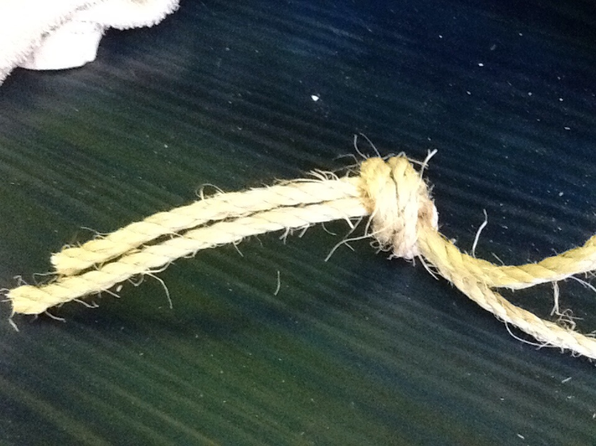
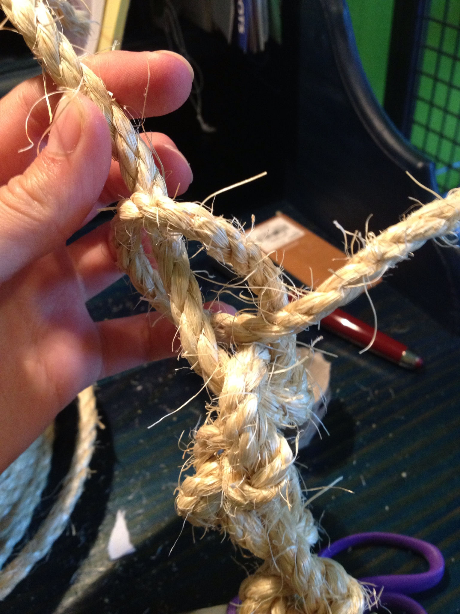
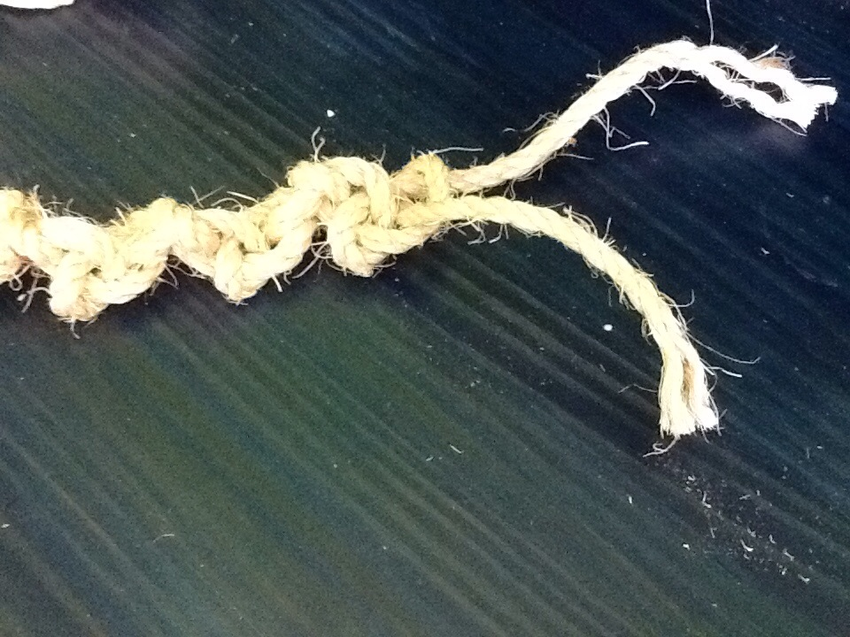
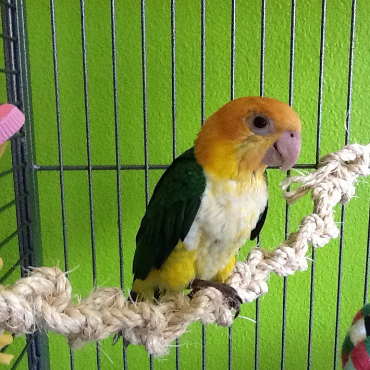

Knotty Rope Perch
MATERIALS: rope
1. Cut two pieces of rope about 4 feet long each. To make a
longer or shorter perch lengthen or shorten rope length. 4
feet makes an 1 1/2'-2' perch.

2. Tie the ends of the ropes together in a simple knot of any
kind. Leave 3-4 inches of tail on the end.

3. Tie one of the ropes around the other in a half hitch
knot. Pull the knot tight. Do the same with the other rope.

4. Repeat step 3 until almost all the rope is used up. Then
tie the tail ends of the rope to the cage bars.

